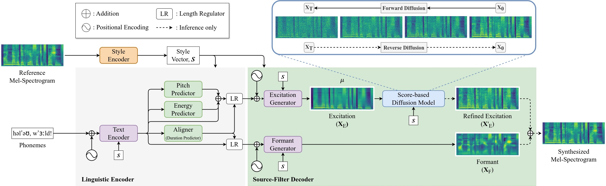

StableForm-TTS
Overcoming Catastrophic Mispronunciation in Diffusion-Based Zero-Shot Speech Synthesis via Stable Formant Generation
INTERSPEECH 2024 Under Review.Abstract. Diffusion models have achieved remarkable success in text-to-speech (TTS), even in zero-shot scenarios. Recent efforts aim to address the trade-off between inference speed and sound quality, often considered the primary drawback of diffusion models. However, we have found a critical mispronunciation issue is being overlooked. Our preliminary study reveals the unstable pronunciation resulting from the diffusion process. Based on this observation, we introduce StableForm-TTS, a novel zero-shot speech synthesis framework designed to produce robust pronunciation while maintaining the advantages of diffusion modeling. By pioneering the adoption of source-filter theory in diffusion TTS, we propose an elaborate architecture for stable formant generation and dynamic pitch generation. Experimental results on unseen speakers show that our model outperforms the state-of-the-art method in terms of pronunciation accuracy and naturalness, with comparable speaker similarity.
Model Overview

The overview of StableForm-TTS. For brevity, the phoneme, pitch, and energy embedding layers are omitted.